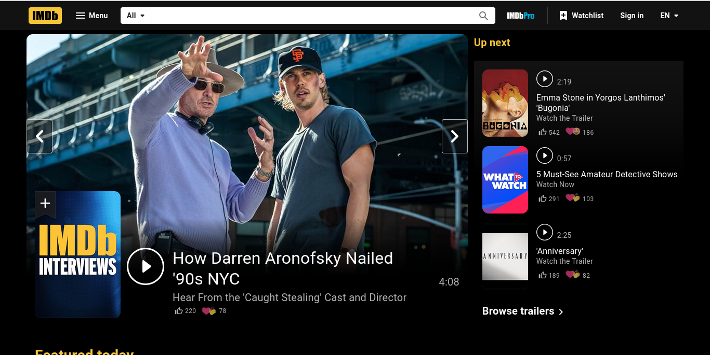
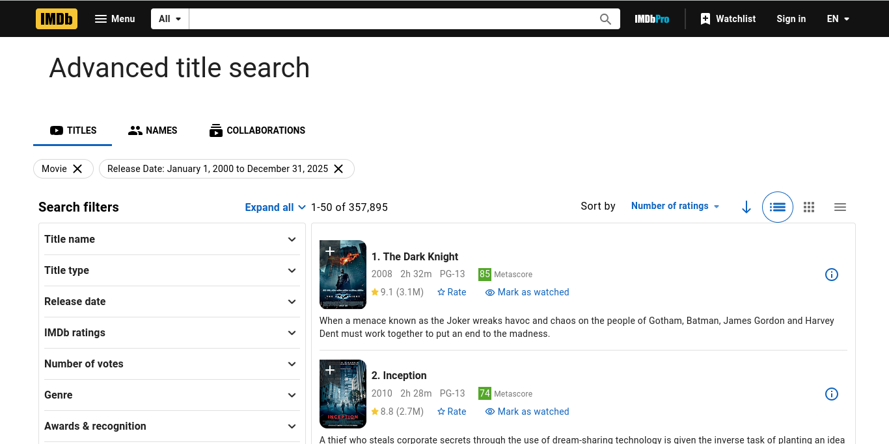

Advanced Web Data Extraction & Movie Intelligence System
This sophisticated web scraping solution is designed to extract comprehensive movie data from IMDB's extensive database. The system automatically navigates through IMDB's movie listings, collecting detailed information about thousands of films including ratings, metadata, summaries, and audience engagement metrics.
The scraper is specifically engineered to work with IMDB's movie search results, targeting feature films released between 2000-2025, sorted by popularity (number of votes). This ensures we capture the most relevant and widely-discussed movies in the database.
Automatically clicks "Load More" buttons up to 199 times to access deep movie listings
Implements random delays and browser fingerprint masking to avoid detection
Captures 8 key data points for each movie including ratings, votes, and metadata
Robust exception handling ensures continuous operation even with page changes
Clean, structured data export in JSON format for easy integration
Runs invisibly in the background without UI interference
Browser automation framework for navigating JavaScript-heavy pages and handling dynamic content loading
HTML parsing library for extracting structured data from web pages with precision
Headless Chrome browser with custom user agents and anti-detection configurations
JSON handling, time management, and random number generation for natural browsing patterns
Creates a headless Chrome browser instance with custom headers and anti-detection measures. Configures user agent strings and disables automation flags to appear as a regular user.
Navigates to IMDB's advanced search page and systematically clicks "Load More" buttons up to 199 times, implementing random delays between actions to simulate human browsing behavior.
Once all content is loaded, extracts the complete page HTML and parses movie data blocks using CSS selectors. Each movie container is individually processed to extract all relevant information.
Processes raw HTML data to extract clean, structured information including title, year, duration, ratings, vote counts, Metacritic scores, summaries, and direct IMDB URLs.
Saves all extracted movie data to a JSON file with proper encoding and formatting, ready for database import or further analysis.
Each movie record contains the following comprehensive data points:
{
"title": "The Shawshank Redemption",
"year": "1994",
"duration": "142 min",
"metascore": "82",
"rating": 9.3,
"total_raters": 2800000,
"summary": "Over the course of several years, two convicts form a friendship...",
"url": "https://www.imdb.com/title/tt0111161/"
}
Identify trending movies, popular genres, and audience preferences to inform content acquisition and recommendation strategies.
Analyze movie performance metrics, rating distributions, and audience engagement patterns for industry insights.
Quickly populate movie databases, recommendation engines, or content management systems with rich metadata.
Track movie popularity trends, rating changes, and audience reception data for competitive intelligence.
Build datasets for machine learning models, sentiment analysis, and predictive analytics in entertainment.
Generate regular reports on movie trends, top performers, and industry statistics without manual data entry.
This project delivers a complete, production-ready web scraping solution with the following components:
This scraping solution has been developed with enterprise-grade quality standards: